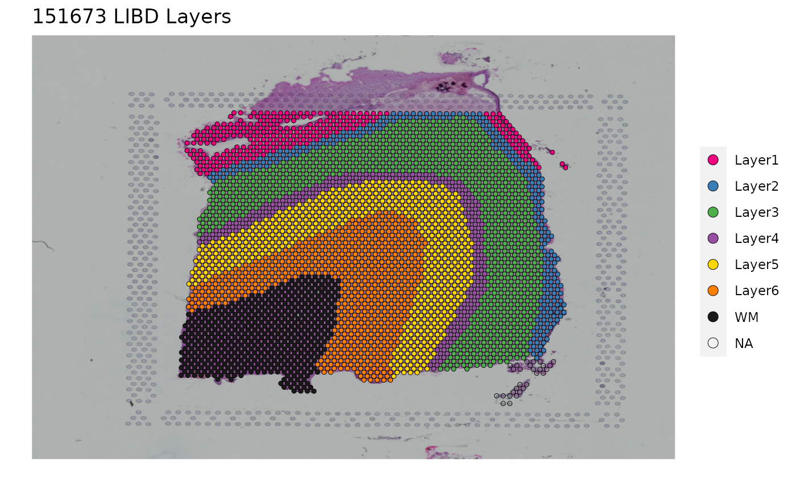
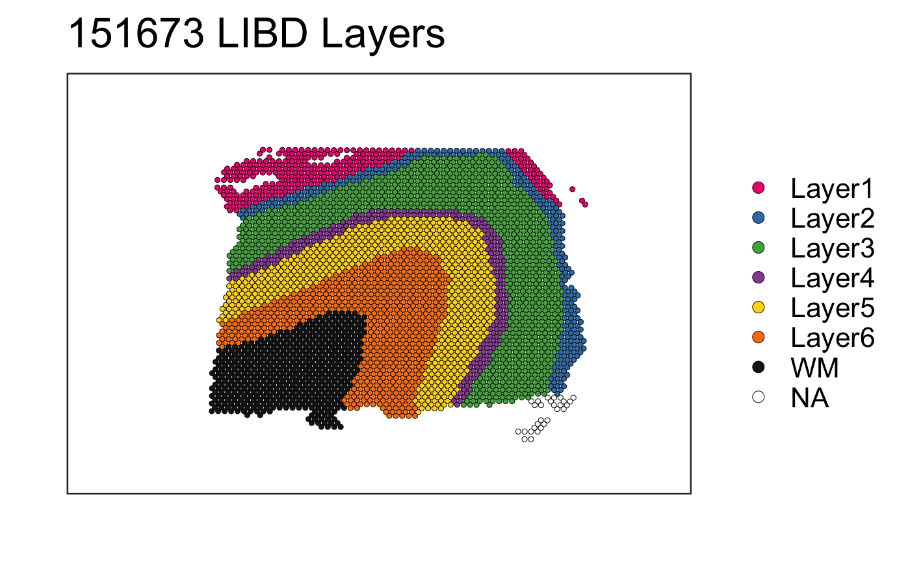
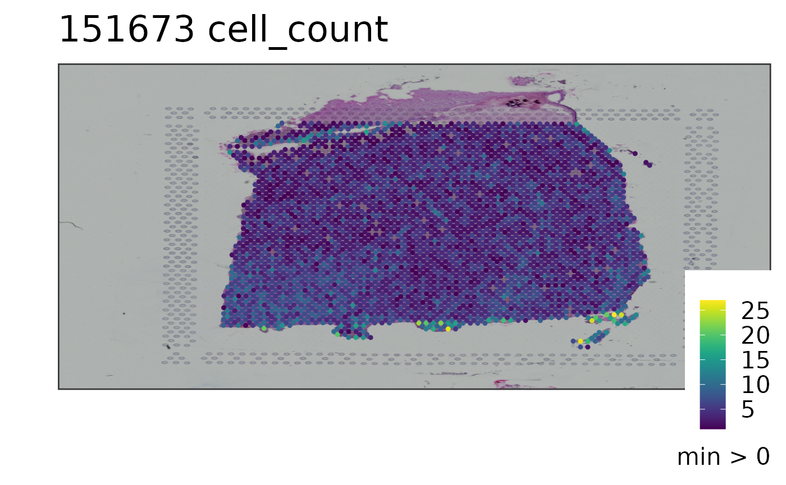
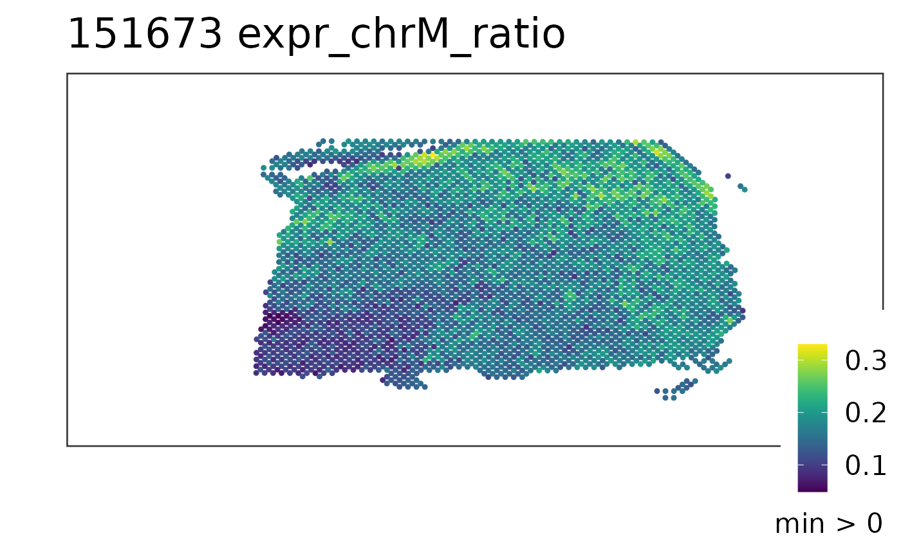

Introduction to spatialLIBD
Leonardo Collado-Torres
Lieber Institute for Brain Development, Johns Hopkins Medical Campuslcolladotor@gmail.com
Kristen R. Maynard
Lieber Institute for Brain Development, Johns Hopkins Medical CampusKristen.Maynard@libd.org
Andrew E. Jaffe
Lieber Institute for Brain Development, Johns Hopkins Medical Campusandrew.jaffe@libd.org
26 April 2020
Source:vignettes/spatialLIBD.Rmd
spatialLIBD.RmdWelcome
Welcome to the spatialLIBD project! It is composed of:
- a shiny web application that we are hosting at spatial.libd.org/spatialLIBD/ that can handle a limited set of concurrent users,
- a Bioconductor package at bioconductor.org/packages/spatialLIBD (or from here) that lets you analyze the data and run a local version of our web application (with our data or yours),
- and a research article with the scientific knowledge we drew from this dataset. The analysis code for our project is available here.
The web application allows you to browse the LIBD human dorsolateral pre-frontal cortex (DLPFC) spatial transcriptomics data generated with the 10x Genomics Visium platform. Through the R/Bioconductor package you can also download the data as well as visualize your own datasets using this web application. Please check the bioRxiv pre-print for more details about this project.
If you tweet about this website, the data or the R package please use the#spatialLIBD hashtag. You can find previous tweets that way as shown here. Thank you! Tweet #spatialLIBD
Study design
As a quick overview, the data presented here is from portion of the DLPFC that spans six neuronal layers plus white matter (A) for a total of three subjects with two pairs of spatially adjacent replicates (B). Each dissection of DLPFC was designed to span all six layers plus white matter (C). Using this web application you can explore the expression of known genes such as SNAP25 (D, a neuronal gene), MOBP (E, an oligodendrocyte gene), and known layer markers from mouse studies such as PCP4 (F, a known layer 5 marker gene).

Basics
Install spatialLIBD
R is an open-source statistical environment which can be easily modified to enhance its functionality via packages. spatialLIBD is a R package available via Bioconductor. R can be installed on any operating system from CRAN after which you can install spatialLIBD by using the following commands in your R session:
if (!requireNamespace("BiocManager", quietly = TRUE)) { install.packages("BiocManager") } BiocManager::install("spatialLIBD") ## Check that you have a valid Bioconductor installation BiocManager::valid()
Required knowledge
spatialLIBD (Collado-Torres, Maynard, and Jaffe, 2020) is based on many other packages and in particular in those that have implemented the infrastructure needed for dealing with single cell RNA sequencing data, visualization functions, and interactive data exploration. That is, packages like SingleCellExperiment that allow you to store the data, ggplot2 and plotly for visualizing the data, and shiny for building an interactive interface. A spatialLIBD user who only accesses the web application is not expected to deal with those packages directly. A spatialLIBD user will need to be familiar with SingleCellExperiment and ggplot2 to understand the data provided by spatialLIBD or the graphical results spatialLIBD provides. Furthermore, it’ll be useful for the user to know about shiny and plotly if you wish to adapt the web application provided by spatialLIBD.
If you are asking yourself the question “Where do I start using Bioconductor?” you might be interested in this blog post.
Asking for help
As package developers, we try to explain clearly how to use our packages and in which order to use the functions. But R and Bioconductor have a steep learning curve so it is critical to learn where to ask for help. The blog post quoted above mentions some but we would like to highlight the Bioconductor support site as the main resource for getting help regarding Bioconductor. Other alternatives are available such as creating GitHub issues and tweeting. However, please note that if you want to receive help you should adhere to the posting guidelines. It is particularly critical that you provide a small reproducible example and your session information so package developers can track down the source of the error.
Citing spatialLIBD
We hope that spatialLIBD will be useful for your research. Please use the following information to cite the package and the research article describing the data provided by spatialLIBD. Thank you!
## Citation info citation("spatialLIBD") #> #> Collado-Torres L, Maynard KR, Jaffe AE (2020). _LIBD Visium spatial #> transcriptomics human pilot data inspector_. doi: #> 10.18129/B9.bioc.spatialLIBD (URL: #> https://doi.org/10.18129/B9.bioc.spatialLIBD), #> https://github.com/LieberInstitute/spatialLIBD - R package version #> 0.99.15, <URL: http://www.bioconductor.org/packages/spatialLIBD>. #> #> Maynard KR, Collado-Torres L, Weber LM, Uytingco C, Barry BK, Williams #> SR, II JLC, Tran MN, Besich Z, Tippani M, Chew J, Yin Y, Kleinman JE, #> Hyde TM, Rao N, Hicks SC, Martinowich K, Jaffe AE (2020). #> "Transcriptome-scale spatial gene expression in the human dorsolateral #> prefrontal cortex." _bioRxiv_. doi: 10.1101/2020.02.28.969931 (URL: #> https://doi.org/10.1101/2020.02.28.969931), <URL: #> https://www.biorxiv.org/content/10.1101/2020.02.28.969931v1>. #> #> To see these entries in BibTeX format, use 'print(<citation>, #> bibtex=TRUE)', 'toBibtex(.)', or set #> 'options(citation.bibtex.max=999)'.
Overview
The spatialLIBD (Collado-Torres, Maynard, and Jaffe, 2020) package was developed for analyzing the human dorsolateral prefrontal cortex (DLPFC) spatial transcriptomics data generated with the 10x Genomics Visium technology by researchers at the Lieber Institute for Brain Development (LIBD) (Maynard, Collado-Torres, Weber, Uytingco, et al., 2020). An initial shiny application was developed for interactively exploring this data and for assigning human brain layer labels to the each spot for each sample generated. While this was useful enough for our project, we made this Bioconductor package in case you want to:
- access our Visium data to get some data from this new technology and develop methods or infrastructure for other Visium datasets.
- re-shape your data into what ours is structured as, then re-use the visualization functions and/or the shiny app itself.
- want to explore our data in more detail. This can range from launching the shiny application locally to diving into the specifics of the data from our project (Maynard, Collado-Torres, Weber, Uytingco, et al., 2020).
In this vignette we’ll showcase how you can access the Human DLPFC LIBD Visium dataset (Maynard, Collado-Torres, Weber, Uytingco, et al., 2020), the R functions provided by spatialLIBD (Collado-Torres, Maynard, and Jaffe, 2020), and an overview of how you can re-shape your own Visium dataset to match the structure we used.
To get started, please load the spatialLIBD package.
library("spatialLIBD")
Human DLPFC Visium dataset
The human DLPFC 10x Genomics Visium dataset analyzed by LIBD researchers and colleagues is described in detail by Maynard, Collado-Torres et al (Maynard, Collado-Torres, Weber, Uytingco, et al., 2020). However, briefly, this dataset is composed of:
- Three brain subjects (all controls; two males, one female; ages 30-46; details).
- Four images per subject: two spatially adjacent replicates at position 0, then two more spatially adjacent replicates 300 micrometers away.
- Slices designed to cover layers 1 through 6 and the white matter (WM) of the dorsolateral prefrontal cortex (DLPFC).
Data specifics
We combined all the Visium data into a single SingleCellExperiment (Lun and Risso, 2020) object that we typically refer to as sce 1. It has 33,538 genes (rows) and 47,681 spots (columns). This is the initial point for most of our analyses (code available on GitHub). Using spatialLIBD (Collado-Torres, Maynard, and Jaffe, 2020) we manually assigned each spot across all 12 images to a layer (L1 through L6 or WM). We then compressed the spot-level data at the layer-level using a pseudo-bulking approach resulting in the SingleCellExperiment object we typically refer to as sce_layer 2. We then computed for each gene t or F statistics assessing whether the gene had higher expression in a given layer compared to the rest (enrichment; t-stat), between one layer and another layer (pairwise; t-stat), or had any expression variability across all layers (anova; F-stat). The results from the models are stored in what we refer to as modeling_results 3.
In summary,
-
sceis the SingleCellExperiment object with all the spot-level data and the histology information for visualization of the data. -
sce_layeris the SingleCellExperiment object with the layer-level data. -
modeling_resultscontains the layer-levelenrichment,pairwiseandanovastatistics.
Downloading the data with spatialLIBD
Using spatialLIBD (Collado-Torres, Maynard, and Jaffe, 2020) you can download all of these R objects. They are hosted by Bioconductor’s ExperimentHub (Morgan and Shepherd, 2020) resource and you can download them using spatialLIBD::fetch_data(). fetch_data() will query ExperimentHub which in turn will download the data and cache it so you don’t have to download it again. If ExperimentHub is unavailable, then fetch_data() has a backup option that does not cache the files 4 Below we obtain all of these objects.
## Connect to ExperimentHub ehub <- ExperimentHub::ExperimentHub() #> using temporary cache /tmp/RtmpJfYYks/BiocFileCache #> snapshotDate(): 2020-04-03
## Downloa small example sce data if (!exists("sce")) sce <- fetch_data(type = "sce_example", eh = ehub) #> Loading objects: #> sce_sub ## If you want to download the full real data (about 2.1 GB in RAM) use: if (FALSE) { if (!exists("sce")) sce <- fetch_data(type = "sce", eh = ehub) } ## Query ExperimentHub and download the data if (!exists("sce_layer")) sce_layer <- fetch_data(type = "sce_layer", eh = ehub) #> Loading objects: #> sce_layer modeling_results <- fetch_data("modeling_results", eh = ehub) #> Loading objects: #> modeling_results
Once you have downloaded the objects, we can explore them a little bit
## spot-level data sce #> class: SingleCellExperiment #> dim: 33538 47681 #> metadata(1): image #> assays(2): counts logcounts #> rownames(33538): ENSG00000243485 ENSG00000237613 ... ENSG00000277475 #> ENSG00000268674 #> rowData names(9): source type ... gene_search is_top_hvg #> colnames(47681): AAACAACGAATAGTTC-1 AAACAAGTATCTCCCA-1 ... #> TTGTTTCCATACAACT-1 TTGTTTGTGTAAATTC-1 #> colData names(73): barcode sample_name ... pseudobulk_UMAP_spatial #> markers_UMAP_spatial #> reducedDimNames(6): PCA TSNE_perplexity50 ... TSNE_perplexity80 #> UMAP_neighbors15 #> altExpNames(0): ## layer-level data sce_layer #> class: SingleCellExperiment #> dim: 22331 76 #> metadata(0): #> assays(2): counts logcounts #> rownames(22331): ENSG00000243485 ENSG00000238009 ... ENSG00000278384 #> ENSG00000271254 #> rowData names(10): source type ... is_top_hvg is_top_hvg_sce_layer #> colnames(76): 151507_Layer1 151507_Layer2 ... 151676_Layer6 151676_WM #> colData names(12): sample_name layer_guess ... layer_guess_reordered #> layer_guess_reordered_short #> reducedDimNames(6): PCA TSNE_perplexity5 ... UMAP_neighbors15 PCAsub #> altExpNames(0): ## list of modeling result tables sapply(modeling_results, class) #> anova enrichment pairwise #> "data.frame" "data.frame" "data.frame" sapply(modeling_results, dim) #> anova enrichment pairwise #> [1,] 22331 22331 22331 #> [2,] 10 23 65 sapply(modeling_results, function(x) { head(colnames(x)) }) #> anova enrichment pairwise #> [1,] "f_stat_full" "t_stat_WM" "t_stat_WM-Layer1" #> [2,] "p_value_full" "t_stat_Layer1" "t_stat_WM-Layer2" #> [3,] "fdr_full" "t_stat_Layer2" "t_stat_WM-Layer3" #> [4,] "full_AveExpr" "t_stat_Layer3" "t_stat_WM-Layer4" #> [5,] "f_stat_noWM" "t_stat_Layer4" "t_stat_WM-Layer5" #> [6,] "p_value_noWM" "t_stat_Layer5" "t_stat_WM-Layer6"
The modeling statistics are in wide format, which can make some visualizations complicated. The function sig_genes_extract_all() provides a way to convert them into long format and add some useful information. Let’s do so below.
## Convert to a long format the modeling results ## This takes a few seconds to run system.time( sig_genes <- sig_genes_extract_all( n = nrow(sce_layer), modeling_results = modeling_results, sce_layer = sce_layer ) ) #> user system elapsed #> 10.641 0.883 31.717 ## Explore the result class(sig_genes) #> [1] "DFrame" #> attr(,"package") #> [1] "S4Vectors" dim(sig_genes) #> [1] 1138881 12
Interactively explore the spatialLIBD data
Now that you have downloaded the data, you can interactively explore the data using a shiny (Chang, Cheng, Allaire, Xie, et al., 2020) web application contained within spatialLIBD (Collado-Torres, Maynard, and Jaffe, 2020). To do so, use the run_app() function as shown below:
if (interactive()) { run_app( sce = sce, sce_layer = sce_layer, modeling_results = modeling_results, sig_genes = sig_genes ) }
The spatialLIBD shiny application allows you to browse the spot-level data and interactively label spots, as well as explore the layer-level results. Once you launch it, check the Documentation tab for each view for more details. In order to avoid duplicating the documentation, we provide all the details on the shiny application itself.
Though overall, this application allows you to export all static visualizations as PDF files or all interactive visualizations as PNG files, as well as all result table as CSV files. This is what produces the version you can access without any R use from your side at spatial.libd.org/spatialLIBD/.
spatialLIBD functions
We already covered fetch_data() which allows you to download the Human DLPFC Visium data from LIBD researchers and colleagues (Maynard, Collado-Torres, Weber, Uytingco, et al., 2020).
Spot-level clusters and discrete variables
With the sce object that contains the spot-level data, we can visualize any discrete variable such as the layers using sce_image_clus() and related functions. These functions know where to extract and how to visualize the histology information.
## View our LIBD layers for one sample sce_image_clus( sce = sce, clustervar = "layer_guess_reordered", sampleid = "151673", colors = libd_layer_colors, ... = " LIBD Layers" )

Most of the variables stored in sce are discrete variables and as such, you can visualize them using sce_image_clus() and sce_image_grid() for one or more than one sample respectively.
## This is not fully precise, but gives you a rough idea ## Some integer columns are actually continuous variables table(sapply(colData(sce), class) %in% c("factor", "integer")) #> #> FALSE TRUE #> 12 61 ## This is more precise (one cluster has 28 unique values) table(sapply(colData(sce), function(x) length(unique(x))) < 29) #> #> FALSE TRUE #> 10 63
Notably, sce_image_clus() has a spatial logical(1) argument which is useful if you want to visualize the data without the histology information provided by geom_spatial() (a custom ggplot2::layer()). In particular, this is useful if you then want to use plotly::ggplotly() or other similar functions on the resulting ggplot2::ggplot() object.
## View our LIBD layers for one sample ## without spatial information sce_image_clus( sce = sce, clustervar = "layer_guess_reordered", sampleid = "151673", colors = libd_layer_colors, ... = " LIBD Layers", spatial = FALSE )

Some helper functions include get_colors() and sort_clusters() as well as the libd_layer_colors object included in spatialLIBD (Collado-Torres, Maynard, and Jaffe, 2020).
## Color palette designed by Lukas M. Weber with feedback from the team. libd_layer_colors #> Layer1 Layer2 Layer3 Layer4 Layer5 #> "#F0027F" "#377EB8" "#4DAF4A" "#984EA3" "#FFD700" #> Layer6 WM NA WM2 #> "#FF7F00" "#1A1A1A" "transparent" "#666666"
Spot-level genes and continuous variables
Similar to sce_image_clus(), the sce_image_gene() family of functions use the sce spot-level object to visualize the gene expression or any continuous variable such as the number of cells per spots. That is, sce_image_gene() can visualize any of the assays(sce) or any of the continuous variables stored in colData(sce). If you want to visualize more than one sample at a time, use sce_image_grid_gene() instead. And just like sce_image_clus(), sce_image_gene() has a spatial logical(1) argument to turn off the custom spatial ggplot2::layer() produced by geom_spatial().
## Available gene expression assays assayNames(sce) #> [1] "counts" "logcounts" ## Not all of these make sense to visualize ## In particular, barcode, row, col, imagerow, imagecol, key are not ## useful to visualize. colnames(colData(sce))[sapply(colData(sce), function(x) { length(unique(x)) }) > 29] #> [1] "barcode" "row" "col" "imagerow" #> [5] "imagecol" "sum_umi" "sum_gene" "key" #> [9] "expr_chrM" "expr_chrM_ratio" ## Visualize a gene sce_image_gene( sce = sce, sampleid = "151673", viridis = FALSE )

## Visualize the estimated number of cells per spot sce_image_gene( sce = sce, sampleid = "151673", geneid = "cell_count" )

## Visualize the fraction of chrM expression per spot ## without the spatial layer sce_image_gene( sce = sce, sampleid = "151673", geneid = "expr_chrM_ratio", spatial = FALSE )

As for the color palette, you can either use the color blind friendly palette when viridis = TRUE or a custom palette we determined. Note that if you design your own palette, you have to take into account that values it can be hard to distinguish some colors from the histology set of purple tones that are noticeable when the continuous variable is below or equal to the minCount (in our palettes such points have a 'transparent' color). For more details, check the internal code of sce_image_gene_p().
Extract significant genes
Earlier we also ran sig_genes_extract_all() in order to run the shiny web application. However, we didn’t explain the output. If you explore it, you’ll notice that it’s a very long table with several columns.
head(sig_genes) #> DataFrame with 6 rows and 12 columns #> top model_type test gene stat pval #> <integer> <character> <character> <character> <numeric> <numeric> #> 1 1 enrichment WM NDRG1 16.3053 1.25896e-26 #> 2 2 enrichment WM PTP4A2 16.1469 2.25133e-26 #> 3 3 enrichment WM AQP1 15.9927 3.97849e-26 #> 4 4 enrichment WM PAQR6 15.1971 7.86258e-25 #> 5 5 enrichment WM ANP32B 14.9798 1.80183e-24 #> 6 6 enrichment WM JAM3 14.7413 4.50756e-24 #> fdr gene_index ensembl in_rows in_rows_top20 #> <numeric> <integer> <character> <IntegerList> <IntegerList> #> 1 2.51372e-22 10404 ENSG00000104419 1,40215,65023,... 1,156337,223320,... #> 2 2.51372e-22 487 ENSG00000184007 2,40531,64532,... 2,223323,245661,... #> 3 2.96145e-22 8201 ENSG00000240583 3,32241,65062,... 3,223314,245643,... #> 4 4.38948e-21 1501 ENSG00000160781 4,34318,65863,... 4,245654,267982 #> 5 8.04735e-21 10962 ENSG00000136938 5,28964,63931,... 5,223329,267975 #> 6 1.67295e-20 12600 ENSG00000166086 6,40868,65917,... 6,156334,223324,... #> results #> <CharacterList> #> 1 WM_top1,WM-Layer1_top20,WM-Layer4_top10,... #> 2 WM_top2,WM-Layer4_top13,WM-Layer5_top20,... #> 3 WM_top3,WM-Layer4_top4,WM-Layer5_top2,... #> 4 WM_top4,WM-Layer5_top13,WM-Layer6_top10 #> 5 WM_top5,WM-Layer4_top19,WM-Layer6_top3 #> 6 WM_top6,WM-Layer1_top17,WM-Layer4_top14,...
The output of sig_genes_extract_all() contains the following columns:
-
top: the rank of the gene for the giventest. -
model_type: eitherenrichment,pairwiseoranova. -
test: the short notation for the test performed. For example,WMis white matter versus the other layers whileWM-Layer1is white matter greater than layer 1. -
gene: the gene symbol. -
stat: the corresponding F or t-statistic. -
pval: the corresponding p-value (two-sided for t-stats). -
fdr: the FDR adjusted p-value. -
gene_index: the row ofsce_layerand the original tables inmodeling_resultsto join the tables if necessary. -
ensembl: Ensembl gene ID. -
in_rows: anIntegerList()specifying all the rows where that gene is present. -
in_rows_top20: anIntegerList()specifying all the rows where that gene is present and where its rank (top) is less than or equal to 20. This information is only included for the first occurrence of each gene if that gene is on the top 20 rank for any of the models. -
results: anCharacterList()specifying all thetestresults where the gene is ranked (top) among the top 20 genes.
sig_genes_extract_all() uses sig_genes_extract() as it’s workhorse and as such has a very similar output.
Visualize modeling results
After extracting the table of modeling results in long format with sig_genes_extract_all(), we can then use layer_boxplot() to visualize any gene of interest for any of the model types and tests we performed. Below we explore the first one (by default). We also show the color palettes used in the shiny application provided by spatialLIBD (Collado-Torres, Maynard, and Jaffe, 2020). The last example has the long title version that uses more information from the sig_genes object we created earlier.
## Note that we recommend setting the random seed so the jittering of the ## points will be reproducible. Given the requirements by BiocCheck this ## cannot be done inside the layer_boxplot() function. ## Create a boxplot of the first gene in `sig_genes`. set.seed(20200206) layer_boxplot(sig_genes = sig_genes, sce_layer = sce_layer)

## Viridis colors displayed in the shiny app ## showing the first pairwise model result ## (which illustrates the background colors used for the layers not ## involved in the pairwise comparison) set.seed(20200206) layer_boxplot( i = which(sig_genes$model_type == "pairwise")[1], sig_genes = sig_genes, sce_layer = sce_layer, col_low_box = viridisLite::viridis(4)[2], col_low_point = viridisLite::viridis(4)[1], col_high_box = viridisLite::viridis(4)[3], col_high_point = viridisLite::viridis(4)[4] )

## Paper colors displayed in the shiny app set.seed(20200206) layer_boxplot( sig_genes = sig_genes, sce_layer = sce_layer, short_title = FALSE, col_low_box = "palegreen3", col_low_point = "springgreen2", col_high_box = "darkorange2", col_high_point = "orange1" )

Correlation of layer-level statistics
Just like we compressed our sce object into sce_layer by pseudo-bulking 5, we can do the same for other single nucleus or single cell RNA sequencing datasets (snRNA-seq, scRNA-seq) and then compute enrichment t-statistics (one group vs the rest; could be one cell type vs the rest or one cluster of cells vs the rest). In our analysis (Maynard, Collado-Torres, Weber, Uytingco, et al., 2020), we did this for several datasets including one of our LIBD Human DLPFC snRNA-seq data generated by Matthew N Tran et al 6. In spatialLIBD (Collado-Torres, Maynard, and Jaffe, 2020) we include a small set of these statistics for the 31 cell clusters identified by Matthew N Tran et al.
## Explore the enrichment t-statistics derived from Tran et al's snRNA-seq ## DLPFC data dim(tstats_Human_DLPFC_snRNAseq_Nguyen_topLayer) #> [1] 692 31 tstats_Human_DLPFC_snRNAseq_Nguyen_topLayer[seq_len(3), seq_len(6)] #> 2 (1) 4 (1) 6 (1) 8 (1) 10 (1) #> ENSG00000104419 -0.6720726 0.30024609 0.5854130 0.1358497 0.3981996 #> ENSG00000184007 0.2535838 -0.28998049 -1.8106052 -0.2096309 -0.4521719 #> ENSG00000240583 -0.2015831 -0.04053423 -0.5120807 0.1688405 -0.3969257 #> 12 (1) #> ENSG00000104419 -0.9731938 #> ENSG00000184007 -0.1840286 #> ENSG00000240583 -0.2086954
The function layer_stat_cor() will take as input one such matrix of statistics and correlate them against our layer enrichment results (or other model types) using the subset of Ensembl gene IDs that are observed in both tables.
## Compute the correlation matrix of enrichment t-statistics between our data ## and Tran et al's snRNA-seq data cor_stats_layer <- layer_stat_cor( tstats_Human_DLPFC_snRNAseq_Nguyen_topLayer, modeling_results, "enrichment" ) ## Explore the correlation matrix head(cor_stats_layer[, seq_len(3)]) #> WM Layer6 Layer5 #> 22 (3) 0.6824669 -0.009192291 -0.1934265 #> 3 (3) 0.7154122 -0.070042729 -0.2290574 #> 23 (3) 0.6637885 -0.031467704 -0.2018306 #> 17 (3) 0.6364983 -0.094216046 -0.2026147 #> 21 (3) 0.6281443 -0.050336358 -0.1988774 #> 7 (4) 0.1850724 -0.197283175 -0.2716890
Once we have computed this correlation matrix, we can then visualize it using layer_stat_cor_plot() as shown below.
## Visualize the correlation matrix layer_stat_cor_plot(cor_stats_layer, max = max(cor_stats_layer))

In order to fully interpret the resulting heatmap you need to know what each of the cell clusters labels mean. In this case, the syntax is xx (Y) where xx is the cluster number and Y is:
-
Excit: excitatory neurons. -
Inhib: inhibitory neurons. -
Oligo: oligodendrocytes. -
Astro: astrocytes. -
OPC: oligodendrocyte progenitor cells. -
Drop: an ambiguous cluster of cells that potentially should be dropped.
You can find the version with the full names here if you are interested in it.
The shiny application provided by spatialLIBD (Collado-Torres, Maynard, and Jaffe, 2020) allows users to upload CSV file with these t-statistics, view the correlation heatmaps, download them, and download the correlation matrix. An example CSV file is provided here.
Gene set enrichment
Many researchers have identified lists of genes that increase the risk of a given disorder or disease, are differentially expressed in a given experiment or set of conditions, have been described in a several research papers, among other collections. We can ask for any of our modeling results whether a list of genes is enriched among our significant results.
For illustration purposes, we included in spatialLIBD (Collado-Torres, Maynard, and Jaffe, 2020) a set of genes from the Simons Foundation Autism Research Initiative SFARI. In our analysis (Maynard, Collado-Torres, Weber, Uytingco, et al., 2020) we used more gene lists. Below, we read in the data and create a list() object with the Ensembl gene IDs that SFARI has provided that are related to autism.
## Read in the SFARI gene sets included in the package asd_sfari <- utils::read.csv( system.file( "extdata", "SFARI-Gene_genes_01-03-2020release_02-04-2020export.csv", package = "spatialLIBD" ), as.is = TRUE ) ## Format them appropriately asd_sfari_geneList <- list( Gene_SFARI_all = asd_sfari$ensembl.id, Gene_SFARI_high = asd_sfari$ensembl.id[asd_sfari$gene.score < 3], Gene_SFARI_syndromic = asd_sfari$ensembl.id[asd_sfari$syndromic == 1] )
After reading the list of genes, we can then compute the enrichment odds ratios and p-values for a given FDR threshold in our statistics.
## Compute the gene set enrichment results asd_sfari_enrichment <- gene_set_enrichment( gene_list = asd_sfari_geneList, modeling_results = modeling_results, model_type = "enrichment" ) ## Explore the results head(asd_sfari_enrichment) #> OR Pval test ID model_type fdr_cut #> 1 1.2659915 0.00318733 WM Gene_SFARI_all enrichment 0.1 #> 2 1.1819109 0.17753833 WM Gene_SFARI_high enrichment 0.1 #> 3 1.2333378 0.31971056 WM Gene_SFARI_syndromic enrichment 0.1 #> 4 0.9702022 0.85164140 Layer1 Gene_SFARI_all enrichment 0.1 #> 5 0.7192630 0.14735979 Layer1 Gene_SFARI_high enrichment 0.1 #> 6 1.1216176 0.73790069 Layer1 Gene_SFARI_syndromic enrichment 0.1
Using the above enrichment table, we can then visualize the odds ratios on a heatmap as shown below. Note that we use the thresholded p-values at -log10(p) = 12 for visualization purposes and only show the odds ratios for -log10(p) > 3 by default.
## Visualize gene set enrichment results gene_set_enrichment_plot( asd_sfari_enrichment, xlabs = gsub(".*_", "", unique(asd_sfari_enrichment$ID)), layerHeights = c(0, 40, 55, 75, 85, 110, 120, 135) )

The shiny application provided by spatialLIBD (Collado-Torres, Maynard, and Jaffe, 2020) allows users to upload CSV file their gene lists, compute the enrichment statistics, visualize them, download the PDF, and download the enrichment table. An example CSV file is provided here.
Re-shaping your data to our structure
This section gets into the details of how we generated the data (Maynard, Collado-Torres, Weber, Uytingco, et al., 2020) behind spatialLIBD (Collado-Torres, Maynard, and Jaffe, 2020). This could be useful if you are a Bioconductor developer or a user very familiar with packages such as SingleCellExperiment.
Generating our data
If you are interested in reshaping your data to fit our structure, we do not provide a quick function to do so. That is intentional given the active development by the Bioconductor community for determining the best way to deal with spatial transcriptomics data in general and the 10x Visium data in particular. Having said that, we do have all the steps and reproducibility information documented across several of our analysis (Maynard, Collado-Torres, Weber, Uytingco, et al., 2020) scripts.
-
reorganize_folder.Ravailable here re-organizes the raw data we were sent by 10x Genomics. -
Layer_Notebook.Ravailable here reads in the Visium data and builds a list ofRangeSummarizedExperiment()objects from SummarizedExperiment, one per sample (image) that is eventually saved asHuman_DLPFC_Visium_processedData_rseList.rda. -
convert_sce.Ravailable here reads inHuman_DLPFC_Visium_processedData_rseList.rdaand builds an initialsceobject with image data undermetadata(sce)$imagewhich is a single data.frame. Subsetting doesn’t automatically subset the image, so you have to do it yourself when plotting as is done bysce_image_clus_p()andsce_image_gene_p(). Having the data from all images in a single object allows you to use the spot-level data from all images to compute clusters and do other similar analyses to the ones you would do with sc/snRNA-seq data. The script creates theHuman_DLPFC_Visium_processedData_sce.Rdatafile. -
sce_scran.Ravailable here then uses scran to read inHuman_DLPFC_Visium_processedData_sce.Rdata, compute the highly variable genes (stored in our finalsceobject atrowData(sce)$is_top_hvg), perform dimensionality reduction (PCA, TSNE, UMAP) and identify clusters using the data from all images. The resulting data is then stored asHuman_DLPFC_Visium_processedData_sce_scran.Rdataand is the main object used throughout our analysis code (Maynard, Collado-Torres, Weber, Uytingco, et al., 2020). -
make-data_spatialLIBD.Ravailable in the source version ofspatialLIBDand online here is the script that reads inHuman_DLPFC_Visium_processedData_sce_scran.Rdataas well as some other outputs from our analysis and combines them into the finalsceandsce_layerobjects provided by spatialLIBD (Collado-Torres, Maynard, and Jaffe, 2020). This script simplifies some operations in order to simplify the code behind the shiny application provided by spatialLIBD.
You don’t necessarily need to do all of this to use the functions provided by spatialLIBD. Note that external to the R objects, for the shiny application provided by spatialLIBD you will need to have the tissue_lowres_image.png image files in a directory structure by sample as shown here in order for the interactive visualizations made with plotly to work.
Expected characteristics of the data
Here is a summary some of the key characteristics required by spatialLIBD’s functions or the shiny application.
## Images data stored under metadata(sce)$image head(metadata(sce)$image) #> # A tibble: 6 x 4 #> sample grob height width #> <int> <list> <int> <int> #> 1 151507 <rastrgrb> 600 600 #> 2 151508 <rastrgrb> 600 600 #> 3 151509 <rastrgrb> 600 600 #> 4 151510 <rastrgrb> 600 600 #> 5 151669 <rastrgrb> 600 600 #> 6 151670 <rastrgrb> 600 600 ## Ensembl gene IDs are row names with the symbol (gene_name) and Ensembl ## ID (gene_name) pasted into `gene_search` ## gene_search <- paste0(gene_name, '; ', gene_id) rowData(sce)[, c("gene_id", "gene_name", "gene_search")] #> DataFrame with 33538 rows and 3 columns #> gene_id gene_name gene_search #> <character> <character> <character> #> ENSG00000243485 ENSG00000243485 MIR1302-2HG MIR1302-2HG; ENSG00000243485 #> ENSG00000237613 ENSG00000237613 FAM138A FAM138A; ENSG00000237613 #> ENSG00000186092 ENSG00000186092 OR4F5 OR4F5; ENSG00000186092 #> ENSG00000238009 ENSG00000238009 AL627309.1 AL627309.1; ENSG00000238009 #> ENSG00000239945 ENSG00000239945 AL627309.3 AL627309.3; ENSG00000239945 #> ... ... ... ... #> ENSG00000277856 ENSG00000277856 AC233755.2 AC233755.2; ENSG00000277856 #> ENSG00000275063 ENSG00000275063 AC233755.1 AC233755.1; ENSG00000275063 #> ENSG00000271254 ENSG00000271254 AC240274.1 AC240274.1; ENSG00000271254 #> ENSG00000277475 ENSG00000277475 AC213203.1 AC213203.1; ENSG00000277475 #> ENSG00000268674 ENSG00000268674 FAM231C FAM231C; ENSG00000268674 ## This information also has to be present in sce_layer stopifnot(all( c("gene_id", "gene_name", "gene_search") %in% colnames(rowData(sce_layer)) )) ## Information about the image coordinates stored in imagerow and imagecol colData(sce)[, c("imagerow", "imagecol")] #> DataFrame with 47681 rows and 2 columns #> imagerow imagecol #> <numeric> <numeric> #> AAACAACGAATAGTTC-1 113.141 147.435 #> AAACAAGTATCTCCCA-1 383.438 413.051 #> AAACAATCTACTAGCA-1 129.523 231.008 #> AAACACCAATAACTGC-1 431.188 155.806 #> AAACAGCTTTCAGAAG-1 344.869 125.068 #> ... ... ... #> TTGTTGTGTGTCAAGA-1 287.039 357.606 #> TTGTTTCACATCCAGG-1 431.773 248.065 #> TTGTTTCATTAGTCTA-1 442.259 210.801 #> TTGTTTCCATACAACT-1 361.341 202.115 #> TTGTTTGTGTAAATTC-1 157.021 277.993 ## The sample names stored under sce$sample_name stopifnot("sample_name" %in% colnames(colData(sce))) ## A unique spot-level ID (such as barcode) stored under sce$key ## The 'key' column is necessary for the plotly code to work. stopifnot("key" %in% colnames(colData(sce))) stopifnot(length(unique(sce$key)) == ncol(sce)) ## Here's how we made those unique keys identical(sce$key, paste0(sce$sample_name, "_", sce$barcode)) #> [1] TRUE ## Some cluster variables that you can specify with run_app(). ## For example: cluster_variables <- c( "GraphBased", "Layer", "Maynard", "Martinowich", paste0("SNN_k50_k", 4:28), "layer_guess_reordered_short", "SpatialDE_PCA", "SpatialDE_pool_PCA", "HVG_PCA", "pseudobulk_PCA", "markers_PCA", "SpatialDE_UMAP", "SpatialDE_pool_UMAP", "HVG_UMAP", "pseudobulk_UMAP", "markers_UMAP", "SpatialDE_PCA_spatial", "SpatialDE_pool_PCA_spatial", "HVG_PCA_spatial", "pseudobulk_PCA_spatial", "markers_PCA_spatial", "SpatialDE_UMAP_spatial", "SpatialDE_pool_UMAP_spatial", "HVG_UMAP_spatial", "pseudobulk_UMAP_spatial", "markers_UMAP_spatial" ) stopifnot(all(cluster_variables %in% colnames(colData(sce)))) ## The last one gets renamed to spatialLIBD in spatialLIBD::app_server() ## Some continuous variables that you can specify in run_app() ## as well as the already mentioned rowData(sce)$gene_search ## For example: continuous_variables <- c( "cell_count", "sum_umi", "sum_gene", "expr_chrM", "expr_chrM_ratio" ) stopifnot(all(continuous_variables %in% colnames(colData(sce)))) ## None of the values of rowData(sce)$gene_search should be re-used in ## colData(sce) stopifnot(!all(rowData(sce)$gene_search %in% colnames(colData(sce)))) ## No column named COUNT as that's used by sce_image_gene_p() and related ## functions. stopifnot(!"COUNT" %in% colnames(colData(sce))) ## The counts and logcounts assays stopifnot(all(c("counts", "logcounts") %in% assayNames(sce))) ## For the layer-level data we also need layer_guess_reordered ## although this is a parameter you can change in run_app() stopifnot("layer_guess_reordered" %in% colnames(colData(sce_layer))) stopifnot(all( c("enrichment", "pairwise", "anova") %in% names(modeling_results) )) ## All the model tables contain the ensembl column stopifnot(all(sapply(modeling_results, function(x) { "ensembl" %in% colnames(x) }))) ## The following column prefixes are present in each of the model tables expected_column_name_starts <- c("^[f|t]_stat_", "^p_value_", "^fdr_") stopifnot(all(sapply(modeling_results, function(model_table) { all(sapply(expected_column_name_starts, function(expected_prefix) { any(grepl( expected_prefix, colnames(model_table) )) })) })))
If you want to run these checks, you can do so using the check_* family of functions.
check_sce(sce) #> class: SingleCellExperiment #> dim: 33538 47681 #> metadata(1): image #> assays(2): counts logcounts #> rownames(33538): ENSG00000243485 ENSG00000237613 ... ENSG00000277475 #> ENSG00000268674 #> rowData names(9): source type ... gene_search is_top_hvg #> colnames(47681): AAACAACGAATAGTTC-1 AAACAAGTATCTCCCA-1 ... #> TTGTTTCCATACAACT-1 TTGTTTGTGTAAATTC-1 #> colData names(73): barcode sample_name ... pseudobulk_UMAP_spatial #> markers_UMAP_spatial #> reducedDimNames(6): PCA TSNE_perplexity50 ... TSNE_perplexity80 #> UMAP_neighbors15 #> altExpNames(0): check_sce_layer(sce_layer) #> class: SingleCellExperiment #> dim: 22331 76 #> metadata(0): #> assays(2): counts logcounts #> rownames(22331): ENSG00000243485 ENSG00000238009 ... ENSG00000278384 #> ENSG00000271254 #> rowData names(10): source type ... is_top_hvg is_top_hvg_sce_layer #> colnames(76): 151507_Layer1 151507_Layer2 ... 151676_Layer6 151676_WM #> colData names(12): sample_name layer_guess ... layer_guess_reordered #> layer_guess_reordered_short #> reducedDimNames(6): PCA TSNE_perplexity5 ... UMAP_neighbors15 PCAsub #> altExpNames(0): ## The output here is too long to print xx <- check_modeling_results(modeling_results) identical(xx, modeling_results) #> [1] TRUE
As we generate more data at LIBD, we might make spatialLIBD (Collado-Torres, Maynard, and Jaffe, 2020) more general if the need arises and we have the resources to work on this.
Reproducibility
The spatialLIBD package (Collado-Torres, Maynard, and Jaffe, 2020) was made possible thanks to:
- R (R Core Team, 2020)
- AnnotationHub (Morgan and Shepherd, 2020)
- benchmarkme (Gillespie, 2019)
- BiocStyle (Oleś, Morgan, and Huber, 2020)
- cowplot (Wilke, 2019)
- DT (Xie, Cheng, and Tan, 2020)
- ExperimentHub (Morgan and Shepherd, 2020)
- fields (Douglas Nychka, Reinhard Furrer, John Paige, and Stephan Sain, 2017)
- ggplot2 (Wickham, 2016)
- golem (Guyader, Fay, Rochette, and Girard, 2020)
- IRanges (Lawrence, Huber, Pagès, Aboyoun, et al., 2013)
- knitcitations (Boettiger, 2019)
- knitr (Xie, 2014)
- plotly (Sievert, 2020)
- Polychrome (Coombes, Brock, Abrams, and Abruzzo, 2019)
- RColorBrewer (Neuwirth, 2014)
- rmarkdown (Allaire, Xie, McPherson, Luraschi, et al., 2020)
- S4Vectors (Pagès, Lawrence, and Aboyoun, 2020)
- scater (McCarthy, Campbell, Lun, and Willis, 2017)
- sessioninfo (Csárdi, core, Wickham, Chang, et al., 2018)
- SingleCellExperiment (Lun and Risso, 2020)
- shiny (Chang, Cheng, Allaire, Xie, et al., 2020)
- SummarizedExperiment (Morgan, Obenchain, Hester, and Pagès, 2020)
- testthat (Wickham, 2011)
- viridisLite (Garnier, 2018)
Code for creating the vignette
## Create the vignette library("rmarkdown") system.time(render("spatialLIBD.Rmd")) ## Extract the R code library("knitr") knit("spatialLIBD.Rmd", tangle = TRUE)
Date the vignette was generated.
#> [1] "2020-04-26 01:03:41 UTC"Wallclock time spent generating the vignette.
#> Time difference of 1.139 minsR session information.
#> ─ Session info ───────────────────────────────────────────────────────────────────────────────────────────────────────
#> setting value
#> version R Under development (unstable) (2020-04-24 r78289)
#> os Debian GNU/Linux 10 (buster)
#> system x86_64, linux-gnu
#> ui X11
#> language (EN)
#> collate en_US.UTF-8
#> ctype en_US.UTF-8
#> tz UTC
#> date 2020-04-26
#>
#> ─ Packages ───────────────────────────────────────────────────────────────────────────────────────────────────────────
#> package * version date lib source
#> AnnotationDbi 1.49.1 2020-01-25 [1] Bioconductor
#> AnnotationHub 2.19.12 2020-04-21 [1] Bioconductor
#> assertthat 0.2.1 2019-03-21 [2] CRAN (R 4.1.0)
#> attempt 0.3.0 2019-04-08 [1] CRAN (R 4.1.0)
#> backports 1.1.6 2020-04-05 [2] CRAN (R 4.1.0)
#> beeswarm 0.2.3 2016-04-25 [1] CRAN (R 4.1.0)
#> benchmarkme 1.0.3 2019-11-09 [1] CRAN (R 4.1.0)
#> benchmarkmeData 1.0.4 2020-04-23 [1] CRAN (R 4.1.0)
#> bibtex 0.4.2.2 2020-01-02 [1] CRAN (R 4.1.0)
#> Biobase * 2.47.3 2020-03-16 [1] Bioconductor
#> BiocFileCache 1.11.6 2020-04-16 [1] Bioconductor
#> BiocGenerics * 0.33.3 2020-03-23 [1] Bioconductor
#> BiocManager 1.30.10 2019-11-16 [2] CRAN (R 4.1.0)
#> BiocNeighbors 1.5.6 2020-04-21 [1] Bioconductor
#> BiocParallel 1.21.3 2020-04-21 [1] Bioconductor
#> BiocSingular 1.3.2 2020-02-14 [1] Bioconductor
#> BiocStyle * 2.15.8 2020-04-19 [1] Bioconductor
#> BiocVersion 3.11.1 2019-11-13 [2] Bioconductor
#> bit 1.1-15.2 2020-02-10 [1] CRAN (R 4.1.0)
#> bit64 0.9-7 2017-05-08 [1] CRAN (R 4.1.0)
#> bitops 1.0-6 2013-08-17 [1] CRAN (R 4.1.0)
#> blob 1.2.1 2020-01-20 [1] CRAN (R 4.1.0)
#> bookdown 0.18 2020-03-05 [1] CRAN (R 4.1.0)
#> cli 2.0.2 2020-02-28 [2] CRAN (R 4.1.0)
#> codetools 0.2-16 2018-12-24 [3] CRAN (R 4.1.0)
#> colorspace 1.4-1 2019-03-18 [1] CRAN (R 4.1.0)
#> config 0.3 2018-03-27 [1] CRAN (R 4.1.0)
#> cowplot 1.0.0 2019-07-11 [1] CRAN (R 4.1.0)
#> crayon 1.3.4 2017-09-16 [2] CRAN (R 4.1.0)
#> curl 4.3 2019-12-02 [2] CRAN (R 4.1.0)
#> data.table 1.12.8 2019-12-09 [1] CRAN (R 4.1.0)
#> DBI 1.1.0 2019-12-15 [1] CRAN (R 4.1.0)
#> dbplyr 1.4.3 2020-04-19 [1] CRAN (R 4.1.0)
#> DelayedArray * 0.13.12 2020-04-10 [1] Bioconductor
#> DelayedMatrixStats 1.9.1 2020-03-30 [1] Bioconductor
#> desc 1.2.0 2018-05-01 [2] CRAN (R 4.1.0)
#> digest 0.6.25 2020-02-23 [2] CRAN (R 4.1.0)
#> dockerfiler 0.1.3 2019-03-19 [1] CRAN (R 4.1.0)
#> doParallel 1.0.15 2019-08-02 [1] CRAN (R 4.1.0)
#> dotCall64 1.0-0 2018-07-30 [1] CRAN (R 4.1.0)
#> dplyr 0.8.5 2020-03-07 [1] CRAN (R 4.1.0)
#> DT 0.13 2020-03-23 [2] CRAN (R 4.1.0)
#> ellipsis 0.3.0 2019-09-20 [2] CRAN (R 4.1.0)
#> evaluate 0.14 2019-05-28 [2] CRAN (R 4.1.0)
#> ExperimentHub 1.13.8 2020-04-21 [1] Bioconductor
#> fansi 0.4.1 2020-01-08 [2] CRAN (R 4.1.0)
#> farver 2.0.3 2020-01-16 [1] CRAN (R 4.1.0)
#> fastmap 1.0.1 2019-10-08 [1] CRAN (R 4.1.0)
#> fields 10.3 2020-02-04 [1] CRAN (R 4.1.0)
#> foreach 1.5.0 2020-03-30 [1] CRAN (R 4.1.0)
#> fs 1.4.1 2020-04-04 [2] CRAN (R 4.1.0)
#> generics 0.0.2 2018-11-29 [1] CRAN (R 4.1.0)
#> GenomeInfoDb * 1.23.17 2020-04-13 [1] Bioconductor
#> GenomeInfoDbData 1.2.3 2020-04-26 [1] Bioconductor
#> GenomicRanges * 1.39.3 2020-03-24 [1] Bioconductor
#> ggbeeswarm 0.6.0 2017-08-07 [1] CRAN (R 4.1.0)
#> ggplot2 3.3.0 2020-03-05 [1] CRAN (R 4.1.0)
#> glue 1.4.0 2020-04-03 [2] CRAN (R 4.1.0)
#> golem 0.2.1 2020-03-05 [1] CRAN (R 4.1.0)
#> gridExtra 2.3 2017-09-09 [1] CRAN (R 4.1.0)
#> gtable 0.3.0 2019-03-25 [1] CRAN (R 4.1.0)
#> htmltools 0.4.0 2019-10-04 [2] CRAN (R 4.1.0)
#> htmlwidgets 1.5.1 2019-10-08 [2] CRAN (R 4.1.0)
#> httpuv 1.5.2 2019-09-11 [1] CRAN (R 4.1.0)
#> httr 1.4.1 2019-08-05 [2] CRAN (R 4.1.0)
#> interactiveDisplayBase 1.25.0 2019-10-29 [1] Bioconductor
#> IRanges * 2.21.8 2020-03-25 [1] Bioconductor
#> irlba 2.3.3 2019-02-05 [1] CRAN (R 4.1.0)
#> iterators 1.0.12 2019-07-26 [1] CRAN (R 4.1.0)
#> jsonlite 1.6.1 2020-02-02 [2] CRAN (R 4.1.0)
#> knitcitations * 1.0.10 2019-09-15 [1] CRAN (R 4.1.0)
#> knitr 1.28 2020-02-06 [2] CRAN (R 4.1.0)
#> labeling 0.3 2014-08-23 [1] CRAN (R 4.1.0)
#> later 1.0.0 2019-10-04 [2] CRAN (R 4.1.0)
#> lattice 0.20-41 2020-04-02 [3] CRAN (R 4.1.0)
#> lazyeval 0.2.2 2019-03-15 [2] CRAN (R 4.1.0)
#> lifecycle 0.2.0 2020-03-06 [2] CRAN (R 4.1.0)
#> lubridate 1.7.8 2020-04-06 [1] CRAN (R 4.1.0)
#> magrittr 1.5 2014-11-22 [2] CRAN (R 4.1.0)
#> maps 3.3.0 2018-04-03 [1] CRAN (R 4.1.0)
#> MASS 7.3-51.5 2019-12-20 [3] CRAN (R 4.1.0)
#> Matrix 1.2-18 2019-11-27 [3] CRAN (R 4.1.0)
#> matrixStats * 0.56.0 2020-03-13 [1] CRAN (R 4.1.0)
#> memoise 1.1.0 2017-04-21 [2] CRAN (R 4.1.0)
#> mime 0.9 2020-02-04 [2] CRAN (R 4.1.0)
#> munsell 0.5.0 2018-06-12 [1] CRAN (R 4.1.0)
#> pillar 1.4.3 2019-12-20 [2] CRAN (R 4.1.0)
#> pkgconfig 2.0.3 2019-09-22 [2] CRAN (R 4.1.0)
#> pkgdown 1.5.1 2020-04-09 [1] CRAN (R 4.1.0)
#> pkgload 1.0.2 2018-10-29 [2] CRAN (R 4.1.0)
#> plotly 4.9.2.1 2020-04-04 [1] CRAN (R 4.1.0)
#> plyr 1.8.6 2020-03-03 [1] CRAN (R 4.1.0)
#> png 0.1-7 2013-12-03 [1] CRAN (R 4.1.0)
#> Polychrome 1.2.5 2020-03-29 [1] CRAN (R 4.1.0)
#> promises 1.1.0 2019-10-04 [2] CRAN (R 4.1.0)
#> purrr 0.3.4 2020-04-17 [2] CRAN (R 4.1.0)
#> R6 2.4.1 2019-11-12 [2] CRAN (R 4.1.0)
#> rappdirs 0.3.1 2016-03-28 [1] CRAN (R 4.1.0)
#> RColorBrewer 1.1-2 2014-12-07 [1] CRAN (R 4.1.0)
#> Rcpp 1.0.4.6 2020-04-09 [2] CRAN (R 4.1.0)
#> RCurl 1.98-1.2 2020-04-18 [1] CRAN (R 4.1.0)
#> RefManageR 1.2.12 2019-04-03 [1] CRAN (R 4.1.0)
#> remotes 2.1.1 2020-02-15 [1] CRAN (R 4.1.0)
#> rlang 0.4.5 2020-03-01 [2] CRAN (R 4.1.0)
#> rmarkdown 2.1 2020-01-20 [1] CRAN (R 4.1.0)
#> roxygen2 7.1.0 2020-03-11 [2] CRAN (R 4.1.0)
#> rprojroot 1.3-2 2018-01-03 [2] CRAN (R 4.1.0)
#> RSQLite 2.2.0 2020-01-07 [1] CRAN (R 4.1.0)
#> rstudioapi 0.11 2020-02-07 [2] CRAN (R 4.1.0)
#> rsvd 1.0.3 2020-02-17 [1] CRAN (R 4.1.0)
#> S4Vectors * 0.25.15 2020-04-04 [1] Bioconductor
#> scales 1.1.0 2019-11-18 [1] CRAN (R 4.1.0)
#> scater 1.15.32 2020-04-22 [1] Bioconductor
#> scatterplot3d 0.3-41 2018-03-14 [1] CRAN (R 4.1.0)
#> sessioninfo * 1.1.1 2018-11-05 [2] CRAN (R 4.1.0)
#> shiny 1.4.0.2 2020-03-13 [1] CRAN (R 4.1.0)
#> shinyWidgets 0.5.1 2020-03-04 [1] CRAN (R 4.1.0)
#> SingleCellExperiment * 1.9.3 2020-03-31 [1] Bioconductor
#> spam 2.5-1 2019-12-12 [1] CRAN (R 4.1.0)
#> spatialLIBD * 0.99.15 2020-04-26 [1] Bioconductor
#> stringi 1.4.6 2020-02-17 [2] CRAN (R 4.1.0)
#> stringr 1.4.0 2019-02-10 [2] CRAN (R 4.1.0)
#> SummarizedExperiment * 1.17.5 2020-03-27 [1] Bioconductor
#> testthat 2.3.2 2020-03-02 [2] CRAN (R 4.1.0)
#> tibble 3.0.1 2020-04-20 [2] CRAN (R 4.1.0)
#> tidyr 1.0.2 2020-01-24 [1] CRAN (R 4.1.0)
#> tidyselect 1.0.0 2020-01-27 [1] CRAN (R 4.1.0)
#> usethis 1.6.0 2020-04-09 [2] CRAN (R 4.1.0)
#> utf8 1.1.4 2018-05-24 [2] CRAN (R 4.1.0)
#> vctrs 0.2.4 2020-03-10 [2] CRAN (R 4.1.0)
#> vipor 0.4.5 2017-03-22 [1] CRAN (R 4.1.0)
#> viridis 0.5.1 2018-03-29 [1] CRAN (R 4.1.0)
#> viridisLite 0.3.0 2018-02-01 [1] CRAN (R 4.1.0)
#> withr 2.2.0 2020-04-20 [2] CRAN (R 4.1.0)
#> xfun 0.13 2020-04-13 [2] CRAN (R 4.1.0)
#> xml2 1.3.2 2020-04-23 [2] CRAN (R 4.1.0)
#> xtable 1.8-4 2019-04-21 [1] CRAN (R 4.1.0)
#> XVector 0.27.2 2020-03-24 [1] Bioconductor
#> yaml 2.2.1 2020-02-01 [2] CRAN (R 4.1.0)
#> zlibbioc 1.33.1 2020-01-24 [1] Bioconductor
#>
#> [1] /usr/local/lib/R/host-site-library
#> [2] /usr/local/lib/R/site-library
#> [3] /usr/local/lib/R/libraryBibliography
This vignette was generated using BiocStyle (Oleś, Morgan, and Huber, 2020), knitr (Xie, 2014) and rmarkdown (Allaire, Xie, McPherson, Luraschi, et al., 2020) running behind the scenes.
Citations were made with knitcitations (Boettiger, 2019).
[1] J. Allaire, Y. Xie, J. McPherson, J. Luraschi, et al. rmarkdown: Dynamic Documents for R. R package version 2.1. 2020. <URL: https://github.com/rstudio/rmarkdown>.
[2] C. Boettiger. knitcitations: Citations for ‘Knitr’ Markdown Files. R package version 1.0.10. 2019. <URL: https://CRAN.R-project.org/package=knitcitations>.
[3] W. Chang, J. Cheng, J. Allaire, Y. Xie, et al. shiny: Web Application Framework for R. R package version 1.4.0.2. 2020. <URL: https://CRAN.R-project.org/package=shiny>.
[4] L. Collado-Torres, K. R. Maynard, and A. E. Jaffe. LIBD Visium spatial transcriptomics human pilot data inspector. https://github.com/LieberInstitute/spatialLIBD - R package version 0.99.15. 2020. DOI: 10.18129/B9.bioc.spatialLIBD. <URL: http://www.bioconductor.org/packages/spatialLIBD>.
[5] K. R. Coombes, G. Brock, Z. B. Abrams, and L. V. Abruzzo. “Polychrome: Creating and Assessing Qualitative Palettes with Many Colors”. In: Journal of Statistical Software, Code Snippets 90.1 (2019), pp. 1-23. DOI: 10.18637/jss.v090.c01.
[6] G. Csárdi, R. core, H. Wickham, W. Chang, et al. sessioninfo: R Session Information. R package version 1.1.1. 2018. <URL: https://CRAN.R-project.org/package=sessioninfo>.
[7] Douglas Nychka, Reinhard Furrer, John Paige, and Stephan Sain. fields: Tools for spatial data. R package version 10.3. Boulder, CO, USA: University Corporation for Atmospheric Research, 2017. DOI: 10.5065/D6W957CT. <URL: https://github.com/NCAR/Fields>.
[8] S. Garnier. viridisLite: Default Color Maps from ‘matplotlib’ (Lite Version). R package version 0.3.0. 2018. <URL: https://CRAN.R-project.org/package=viridisLite>.
[9] C. Gillespie. benchmarkme: Crowd Sourced System Benchmarks. R package version 1.0.3. 2019. <URL: https://CRAN.R-project.org/package=benchmarkme>.
[10] V. Guyader, C. Fay, S. Rochette, and C. Girard. golem: A Framework for Robust Shiny Applications. R package version 0.2.1. 2020. <URL: https://CRAN.R-project.org/package=golem>.
[11] M. Lawrence, W. Huber, H. Pagès, P. Aboyoun, et al. “Software for Computing and Annotating Genomic Ranges”. In: PLoS Computational Biology 9 (8 2013). DOI: 10.1371/journal.pcbi.1003118. <URL: http://www.ploscompbiol.org/article/info%3Adoi%2F10.1371%2Fjournal.pcbi.1003118}.>
[12] A. Lun and D. Risso. SingleCellExperiment: S4 Classes for Single Cell Data. R package version 1.9.3. 2020.
[13] K. R. Maynard, L. Collado-Torres, L. M. Weber, C. Uytingco, et al. “Transcriptome-scale spatial gene expression in the human dorsolateral prefrontal cortex”. In: bioRxiv (2020). DOI: 10.1101/2020.02.28.969931. <URL: https://www.biorxiv.org/content/10.1101/2020.02.28.969931v1>.
[14] D. J. McCarthy, K. R. Campbell, A. T. L. Lun, and Q. F. Willis. “Scater: pre-processing, quality control, normalisation and visualisation of single-cell RNA-seq data in R”. In: Bioinformatics 33 (8 2017), pp. 1179-1186. DOI: 10.1093/bioinformatics/btw777.
[15] M. Morgan, V. Obenchain, J. Hester, and H. Pagès. SummarizedExperiment: SummarizedExperiment container. R package version 1.17.5. 2020.
[16] M. Morgan and L. Shepherd. AnnotationHub: Client to access AnnotationHub resources. R package version 2.19.12. 2020.
[17] M. Morgan and L. Shepherd. ExperimentHub: Client to access ExperimentHub resources. R package version 1.13.8. 2020.
[18] E. Neuwirth. RColorBrewer: ColorBrewer Palettes. R package version 1.1-2. 2014. <URL: https://CRAN.R-project.org/package=RColorBrewer>.
[19] A. Oleś, M. Morgan, and W. Huber. BiocStyle: Standard styles for vignettes and other Bioconductor documents. R package version 2.15.8. 2020. <URL: https://github.com/Bioconductor/BiocStyle>.
[20] H. Pagès, M. Lawrence, and P. Aboyoun. S4Vectors: Foundation of vector-like and list-like containers in Bioconductor. R package version 0.25.15. 2020.
[21] R Core Team. R: A Language and Environment for Statistical Computing. R Foundation for Statistical Computing. Vienna, Austria, 2020. <URL: https://www.R-project.org/>.
[22] C. Sievert. Interactive Web-Based Data Visualization with R, plotly, and shiny. Chapman and Hall/CRC, 2020. ISBN: 9781138331457. <URL: https://plotly-r.com>.
[23] H. Wickham. ggplot2: Elegant Graphics for Data Analysis. Springer-Verlag New York, 2016. ISBN: 978-3-319-24277-4. <URL: https://ggplot2.tidyverse.org>.
[24] H. Wickham. “testthat: Get Started with Testing”. In: The R Journal 3 (2011), pp. 5-10. <URL: https://journal.r-project.org/archive/2011-1/RJournal_2011-1_Wickham.pdf>.
[25] C. Wilke. cowplot: Streamlined Plot Theme and Plot Annotations for ‘ggplot2’. R package version 1.0.0. 2019. <URL: https://CRAN.R-project.org/package=cowplot>.
[26] Y. Xie. “knitr: A Comprehensive Tool for Reproducible Research in R”. In: Implementing Reproducible Computational Research. Ed. by V. Stodden, F. Leisch and R. D. Peng. ISBN 978-1466561595. Chapman and Hall/CRC, 2014. <URL: http://www.crcpress.com/product/isbn/9781466561595>.
[27] Y. Xie, J. Cheng, and X. Tan. DT: A Wrapper of the JavaScript Library ‘DataTables’. R package version 0.13. 2020. <URL: https://CRAN.R-project.org/package=DT>.
Check this code for details on how we built the
sceobject. In particular checkconvert_sce.Randsce_scran.R.↩Check this code for details on how we built the
sce_layerobject. In particular checkspots_per_layer.Randlayer_enrichment.R.↩Check this code for details on how we built the
modeling_resultsobject. In particular checklayer_specificity_fstats.R,layer_specificity.R, andmisc_numbers.R.↩You can change the
destdirargument and specific a specific location that you will use and re-use. However the default value ofdestdiris a temporary directory that will be wiped out once you close your R session.↩For more details, check this script.↩
For more details, check this script.↩